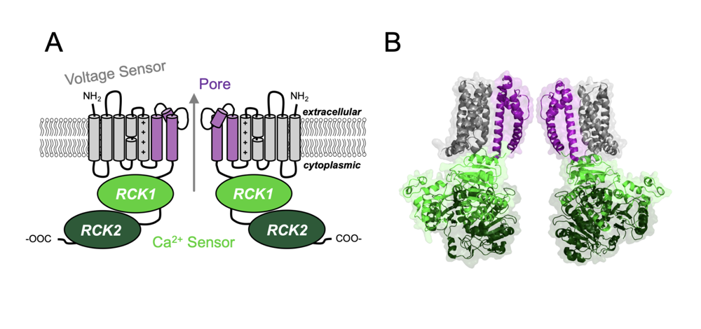

Research
Current work
My current project studies hERG channel gating mechanisms and assembly. It uses conformation-selective antibody fragments (ScFv), patch-clamp electrophysiology, and kinetic modeling to define structure-function relationships. The goal of this work is to understand how the expression, structure, and function of these channels relate, so that we can improve treatments for rhythm disorders.
From Ion Channels to the ECG
Explore how hERG (IKr) influences ventricular repolarization and the surface ECG.
Normal reference (100%)Selected IKr
Clinical Connection
Why can reduced IKr increase arrhythmia susceptibility?
IKr contributes to ventricular repolarization. Reducing this current can prolong action-potential duration and diminish repolarization reserve. Under susceptible conditions, early afterdepolarizations and spatially heterogeneous repolarization can contribute to torsades de pointes. Actual arrhythmia risk depends on multiple factors, including other ionic currents, heart rate, electrolytes, medications, and underlying cardiac disease.
Graduate School Work
During my PhD in the laboratory of Brad S. Rothberg at Temple University, I characterized BK channel activation and inhibition by small-molecule drugs, and by disease-associated mutations. Those studies combined macroscopic recordings, single-channel recordings, and kinetic models. Modeling helps us understand proper mechanisms of activation, and the molecular effects of certain drugs and mutations.

We can account for changes in channel function (gating) by changes in certain gating parameters. I made an interactive representation of the dual-allosteric model below to see how changing these parameters would be observed in conductance-voltage relationships across different concentrations of calcium.
Dual-Allosteric Model of BK Channel Gating (Horrigan–Aldrich model)
Steady-state open probability from the dual-allosteric model. Dashed lines use the published parameters; solid lines use your current values.
Click a letter to adjust its value.
Click a letter on the scheme to adjust its value.
Fit A and Fit B parameters are listed in Table 1 of Rockman, Vouga, and Rothberg, J Gen Physiol 2020.
0 µM 1 µM 10 µM 100 µM Ca²⁺ (left)
Memberships
- American College of Cardiology (2024–)
- Heart Rhythm Society (2022–)
- Society of General Physiologists (2019–)
- Biophysical Society (2019–)
- American Physician Scientists Association (2015–)
Educational visualization. Action-potential and ECG responses are schematic unless otherwise specified; not intended for clinical prediction.